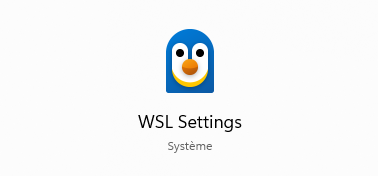
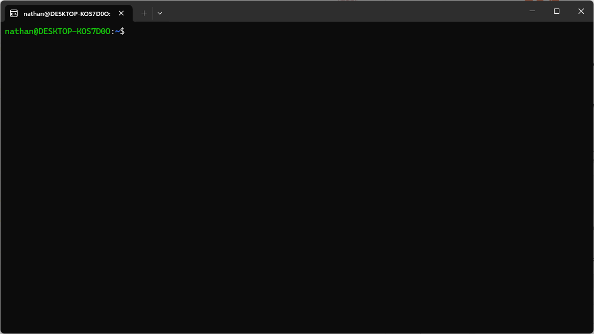
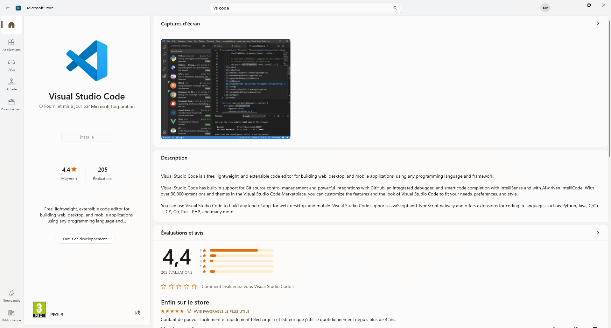
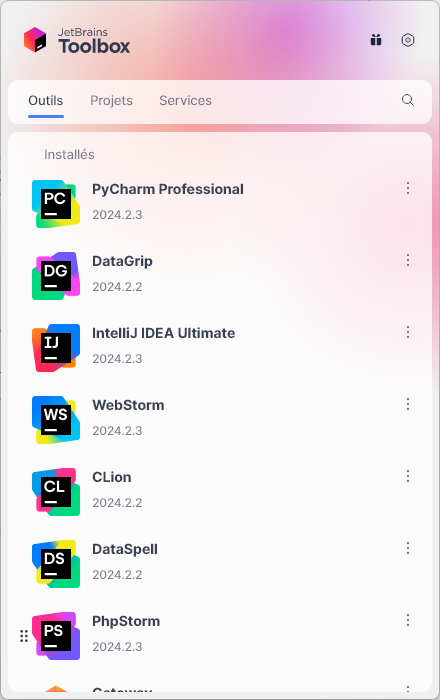
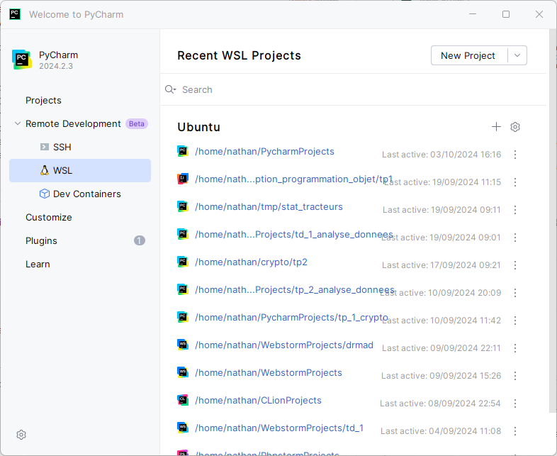
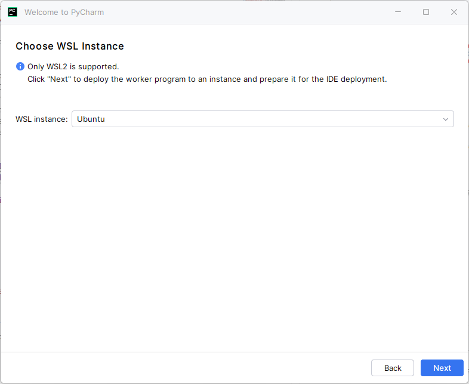
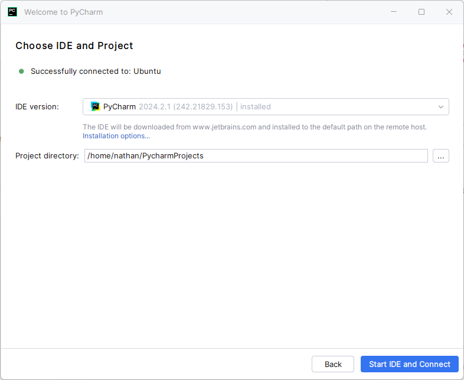
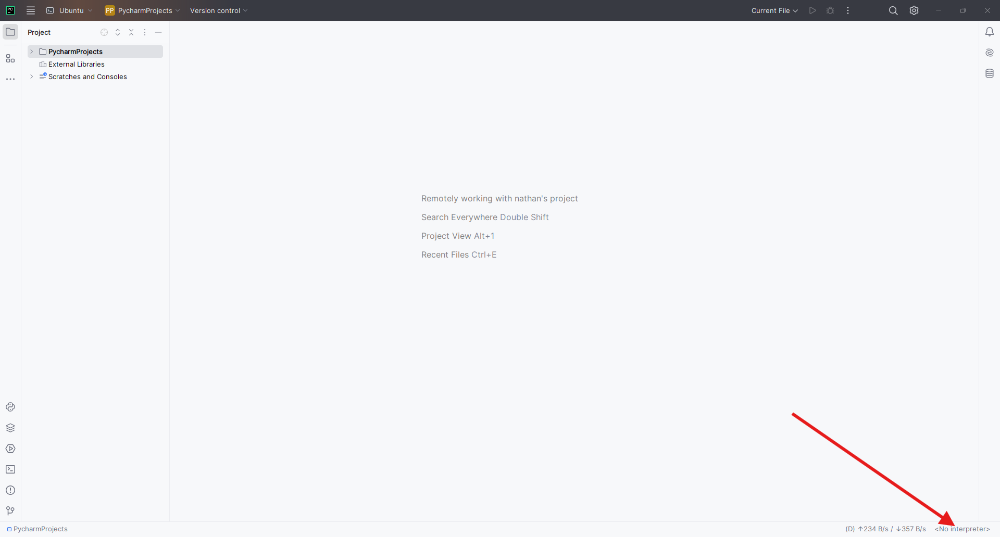
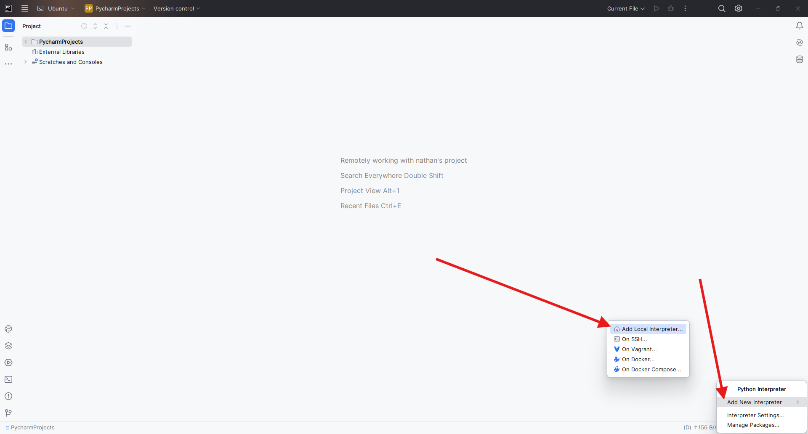
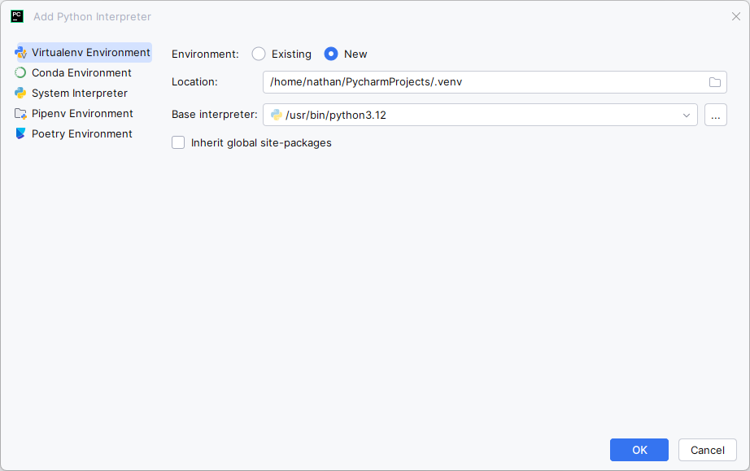

Ce tutoriel a été réalisé par Nathan PONTHIEU, étudiant de deuxième année en B.U.T informatique.
En cas de problème ou pour toute question concernant WSL ou une partie de ce tutoriel, n’hésitez pas à me contacter sur ma boite mail universitaire nathan.ponthieu@edu.univ-fcomte.fr
WSL pour Windows Subsystem for Linux est une intégration Linux à Windows 10/11 développée par Microsoft, qui permet d’avoir une distribution Linux installée sur son système Windows.
WSL s’adresse à toutes les personnes qui ne souhaitent pas avoir de dual-boot Linux/Windows sur son PC même si ça reste l’idéal.
WSL est parfaitement intégré à Windows car WSL est officiellement développé par Microsoft.
WSL est la combinaison du “meilleur des deux mondes”. Vous profiterez de l’expérience utilisateur confortable de Windows ainsi que de la puissance de Linux pour le développement.
WSL présente également de nombreux avantages : - Très rapide, se lance en quelques secondes - Pas besoin d’avoir de dual boot entre Windows et Linux - WSL est très simple à installer comparé à une installation en dual boot - WSL est fourni et maintenu par Microsoft, et est donc stable - Plus rapide et mieux intégré qu’une machine virtuelle VirtualBox - Pas de problème de compatibilité matérielle avec Linux - Accès aux fichiers Linux directement depuis l’explorateur de fichiers Windows - Pas de « pollution » du système Windows en lui-même (fichiers et installations dans WSL) - En cas de problème, une réinstallation de WSL sera simple et rapide
WSL est très simple à installer, il suffit de taper la commande ci-dessous dans un terminal PowerShell en tant qu’administrateur (clic droit sur l’application ‘Terminal’ puis ‘exécuter en tant qu’administrateur’).
wsl --installWindows installe alors WSL ainsi que Ubuntu en
distribution par défaut.
> Vous devrez ensuite impérativement redémarrer votre pc
comme indiqué par le terminal
Si en tapant cette commande, on vous dis que wsl est déjà installé, alors il faudra taper :
wsl --updatePuis dans ce cas, il faudra ensuite ouvrir le Microsoft Store et installer Ubuntu puis redémarrer.
A la suite de l’installation, vous avez trois nouvelles applications
sur votre PC: - WSL
L’application lance WSL sur la distribution par défaut (Ubuntu). - WSL
Settings

Paramètres pour WSL - Ubuntu
L’application lance l’instance d’Ubuntu installée par WSL (équivalent à
l’application WSL)
Pour accéder à WSL, il faut lancer soit l’application WSL ou bien Ubuntu. Le terminal Linux apparaitra alors. 
Au premier lancement de WSL, on vous demandera un nom d’utilisateur et un mot de passe. Il faut ensuite impérativement mettre à jour le système avec les commandes :
sudo apt update sudo apt upgrade
Ensuite, vous êtes libre d’installer les programmes que vous
souhaitez avec apt et de créer les fichiers et projets que
vous souhaitez.
Vous pouvez accéder à vos fichiers sur WSL depuis l’explorateur de fichiers Windows.
Vos dossiers personnels et projets doivent être crées dans votre espace utilisateur, soit
/home/votrelogin
Python est installé par défaut sur WSL, pas besoin de l’installer, vous pouvez cependant installer pip pour créer des environnements virtuels Python avec:
sudo apt install python3-pipPour installer la base de données MySQL sur WSL, on l’installe avec
apt :
sudo apt install mysql-serverEnsuite il faudra vous y connecter en tant que root :
sudo mysql -u rootUne fois connecté en tant que root, il faudra ensuite créer un utilisateur et une base de données :
CREATE DATABASE BDD_login; -- créer votre base de données
CREATE USER 'login'@'%' IDENTIFIED BY 'motdepasse'; -- créer votre utilisateur
GRANT ALL PRIVILEGES ON *.* To 'login'@'%'; -- donner tous les droits à votre utilisateur
FLUSH PRIVILEGES; -- mettre à jour les privilègesVous pouvez ensuite quitter mysql en tapant exit.
Vous pourrez vous connecter à MySQL avec votre nouvel utilisateur:
mysql -u login -pIl faut maintenant modifier la configuration de MySQL pour qu’elle
corresponde à celle des PC de l’IUT en modifiant le fichier de
configuration /etc/mysql/my.cnf.
Pour cela, on ouvre d’abord le fichier :
sudo nano /etc/mysql/my.cnfAjouter le code suivant au fichier :
[mysqld]
lower_case_table_names=0
local_infile=ON
sql_mode = "ONLY_FULL_GROUP_BY,STRICT_TRANS_TABLES,NO_ZERO_IN_DATE,NO_ZERO_DATE,ERROR_FOR_DIVISION_BY_ZERO,NO_ENGINE_SUBSTITUTION"
[mysql]
local_infile=ONPuis redémarrer MySQL avec :
sudo systemctl restart mysqlMySQL est à ce satde opérationnel mais il manque une dernière manipulation afin de pouvoir se connecter à MySQL depuis DataGrip.
Il va falloir modifier un autre fichier de configuration de MySQL pour autoriser les connexions depuis l’extérieur de WSL, pour cela :
sudo nano /etc/mysql/mysql.conf.d/mysqld.cnfIl faudra ensuite chercher la ligne bind-address puis
remplacer l’IP existente sur cette ligne par = 0.0.0.0, ce
qui donne :
bind-address = 0.0.0.0Il faudra ensuite redémarrer mysql :
sudo systemctl restart mysqlMySQL est installé et opérationnel !
NB : Consultez La section “Cas particulier de DataGrip” pour savoir comment vous connecter à votre base de données avec DataGrip depuis Windows.
Le plus simple pour gérer, maintenir et mettre à jour vos éditeurs de code est de les installer sur Windows de cette manière.
Pour Visual Studio Code, installez le directement depuis le Microsoft Store, vous pourrez facilement le mettre à jour de cette manière. 
Pour les éditeurs JetBrains(Pycharm, DataGrip, …), le plus simple est d’installer leur JetBrains Toolbox. Vous pourrez alors facilement installer et mettre à jour leurs IDE. 
Pour utiliser Visual studio code sur WSL (après l’avoir installé au préalable sur Windows) :
Pour fermer la connection de VsCode à WSL, réappuyez à nouveau sur le carré bleu et sélectionnez ‘Close remote connection’
Pour les IDE Jetbrains c’est un peu plus compliqué qu’avec VsCode. Je fais l’exemple sur Pycharm mais c’est à peu près équivalent sur les autres IDE Jetbrains.
Vous pouvez simplement créer un projet dans l’arborescence de fichiers WSL.
Exemple :
Pycharm devrait alors automatiquement détecter votre interpréteur Python présent sur WSL.
Pour activer votre environnement virtuel Python dans le terminal une fois votre projet créer (si il ne l’est pas déjà) :
source .venv/bin/activateOn voit alors (.venv) appraitre devant le prompt du
terminal ce qui signifie que l’environnement virtuel est activé.
Vous pouvez ensuite installer vos paquets Python avec :
pip install <nom_paquet>
# Par exemple : pip install flaskVous pouvez utiliser l’option “WSL” dans le menu de Pycharm. Dans ce
cas Pycharm se connectera à WSL comme montré sur VsCode, vous serez donc
comme en local sur WSL.
> Attention, L’IDE sera plus lent, et cette option
“WSL” est moins pratique que de créer directement un projet dans
l’arborescence Linux. > > En effet, Pycharm va se
télécharger à nouveau dans WSL, puis se connecter sur son
jumeau qu’il aura installé sur WSL. De plus, vous devrez créer
au préalable le répertoire du projet, vous ne pourrez
pas définir quel type de projet créer (par exemple flask) et
vous devrez vous-même créer votre environnement
virtuel. > > Je recommande de réserver cette
méthode uniquement dans des cas particuliers
Pour utiliser cette méthode :
  
Voici ensuite comment ajouter votre interpréteur
  
Pour créer un projet avec DataGrip, vous pouvez créer un projet normalement comme avec Pycharm, vous devez par contre toujours sélectionner un dossier dans WSL.
Pour ajouter votre base de données à votre projet DataGrip, cela sera légèrement différent que sur les PC de l’IUT ou sur une distribution Linux directement.
Chercher l’adresse IP de WSL :
hostname -IDans DataGrip, lors de l’ajout de votre base de données, vous devrez alors spécifier cette adresse IP au lieu de ‘localhost’.
Exemple :